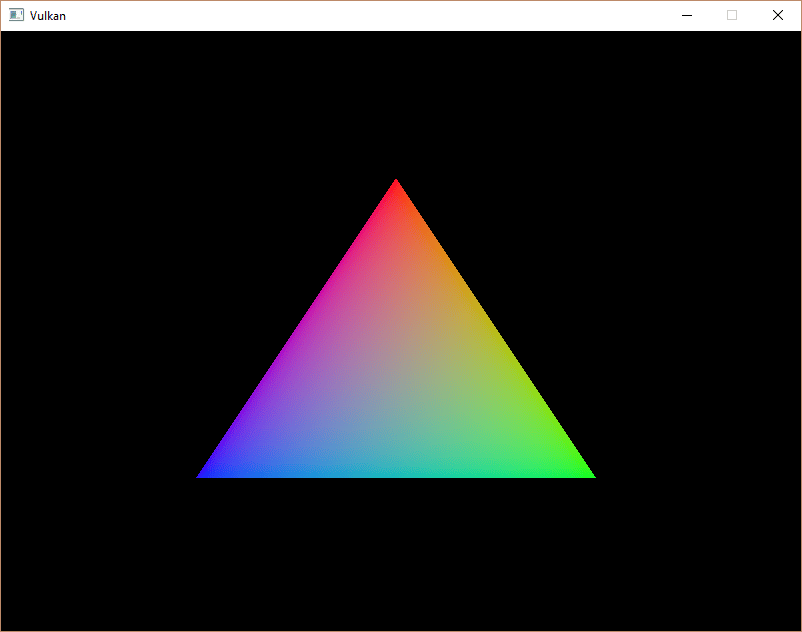
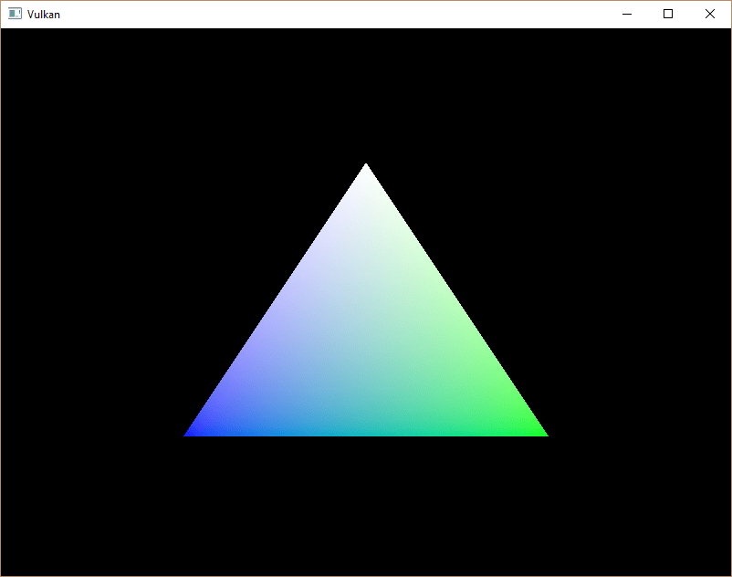

Vertex buffer creation
Introduction
Buffers in Vulkan are regions of memory used for storing arbitrary data that can be read by the graphics card. They can be used to store vertex data, which we’ll do in this chapter, but they can also be used for many other purposes that we’ll explore in future chapters. Unlike the Vulkan objects we’ve been dealing with so far, buffers do not automatically allocate memory for themselves. The work from the previous chapters has shown that the Vulkan API puts the programmer in control of almost everything, and memory management is one of those things.
Buffer creation
Create a new function createVertexBuffer and call it from initVulkan right before createCommandBuffers.
void initVulkan()
{
createInstance();
setupDebugMessenger();
createSurface();
pickPhysicalDevice();
createLogicalDevice();
createSwapChain();
createImageViews();
createGraphicsPipeline();
createCommandPool();
createVertexBuffer();
createCommandBuffers();
createSyncObjects();
}
...
void createVertexBuffer()
{
}Creating a buffer requires us to fill a vk::BufferCreateInfo structure.
vk::BufferCreateInfo bufferInfo{.size = sizeof(vertices[0]) * vertices.size(),
.usage = vk::BufferUsageFlagBits::eVertexBuffer,
.sharingMode = vk::SharingMode::eExclusive};The size field specifies the size of the buffer in bytes. Calculating
the byte size of the vertex data is straightforward with sizeof.
The usage field indicates for which purposes the data in the
buffer is going to be used. It is possible to specify multiple purposes using
a bitwise or. Our use case will be a vertex buffer, we’ll look at other
types of usage in future chapters.
Just like the images in the swap chain, buffers can also be owned by a specific queue family or be shared between multiple at the same time. The buffer will only be used from the graphics queue, so we can stick to exclusive access.
There is also a flags field, which is used to configure sparse buffer memory. It’s not relevant right now, so
we’ll leave it at the default value of 0.
We can now create the buffer with vk::raii::Buffer constructor.
Define a class member to hold the buffer handle and call it vertexBuffer.
vk::raii::Buffer vertexBuffer = nullptr;
...
void createVertexBuffer() {
vk::BufferCreateInfo bufferInfo{.size = sizeof(vertices[0]) * vertices.size(),
.usage = vk::BufferUsageFlagBits::eVertexBuffer,
.sharingMode = vk::SharingMode::eExclusive};
vertexBuffer = vk::raii::Buffer(device, bufferInfo);
}The buffer should be available for use in rendering commands until the end of the program, and it does not depend on the swap chain.
Memory requirements
The buffer has been created, but it doesn’t have any memory assigned to it yet.
The first step of allocating memory for the buffer is to query its memory requirements using the aptly named vk::raii::Buffer::getMemoryRequirements function.
vk::MemoryRequirements memRequirements = vertexBuffer.getMemoryRequirements();The vk::MemoryRequirements struct has three fields:
-
size: The size of the required memory in bytes may differ frombufferInfo.size. -
alignment: The offset in bytes where the buffer begins in the allocated region of memory, depends onbufferInfo.usageandbufferInfo.flags. -
memoryTypeBits: Bit field of the memory types that are suitable for the buffer.
Graphics cards can offer different types of memory to allocate from.
Each type of memory varies in terms of allowed operations and performance characteristics.
We need to combine the requirements of the buffer and our own application requirements to find the right type of memory to use.
Let’s create a new function findMemoryType for this purpose.
uint32_t findMemoryType(uint32_t typeFilter, vk::MemoryPropertyFlags properties) {
}First we need to query info about the available types of memory using vk::raii::PhysicalDevice::getMemoryProperties.
vk::PhysicalDeviceMemoryProperties memProperties = physicalDevice.getMemoryProperties();The vk::PhysicalDeviceMemoryProperties structure has two arrays memoryTypes and memoryHeaps.
Memory heaps are distinct memory resources like dedicated VRAM and swap space in RAM for when VRAM runs out.
The different types of memory exist within these heaps.
Right now we’ll only concern ourselves with the type of memory and not the heap it comes from, but you can imagine that this can affect performance.
Let’s first find a memory type that is suitable for the buffer itself:
for (uint32_t i = 0; i < memProperties.memoryTypeCount; i++)
{
if ((typeFilter & (1 << i)))
{
return i;
}
}
throw std::runtime_error("failed to find suitable memory type!");The typeFilter parameter will be used to specify the bit field of memory types that are suitable.
That means that we can find the index of a suitable memory type by simply iterating over them and checking if the corresponding bit is set to 1.
However, we’re not just interested in a memory type that is suitable for the vertex buffer.
We also need to be able to write our vertex data to that memory.
The memoryTypes array consists of vk::MemoryType structs that specify the
heap and properties of each memory type.
The properties define special features of the memory, like being able to map it so we can write to it from the CPU.
This property is indicated with vk::MemoryPropertyFlagBits::eHostVisible, but we also need to use the vk::MemoryPropertyFlagBits::eHostCoherent property.
We’ll see why when we map the memory.
We can now modify the loop to also check for the support of this property:
for (uint32_t i = 0; i < memProperties.memoryTypeCount; i++)
{
if ((typeFilter & (1 << i)) && (memProperties.memoryTypes[i].propertyFlags & properties) == properties)
{
return i;
}
}We may have more than one desirable property, so we should check if the result of the bitwise AND is not just non-zero, but equal to the desired properties bit field. If there is a memory type suitable for the buffer that also has all the properties we need, then we return its index, otherwise we throw an exception.
Memory allocation
We now have a way to determine the right memory type, so we can actually allocate the memory by filling in the vk::MemoryAllocateInfo structure.
vk::MemoryAllocateInfo memoryAllocateInfo{
.allocationSize = memRequirements.size,
.memoryTypeIndex = findMemoryType(memRequirements.memoryTypeBits, vk::MemoryPropertyFlagBits::eHostVisible | vk::MemoryPropertyFlagBits::eHostCoherent)};Memory allocation is now as simple as specifying the size and type, both of which are derived from the memory requirements of the vertex buffer and the desired property.
Create a class member to store the handle to the memory and allocate it with the vk::raii::DeviceMemory constructor.
vk::raii::Buffer vertexBuffer = nullptr;
vk::raii::DeviceMemory vertexBufferMemory = nullptr;
...
vertexBufferMemory = vk::raii::DeviceMemory(device, memoryAllocateInfo);If memory allocation was successful, then we can now associate this memory with the buffer using vk::raii::Buffer::bindBufferMemory:
vertexBuffer.bindMemory( *vertexBufferMemory, 0 );The first parameter is self-explanatory, and the second parameter is the offset within the region of memory.
Since this memory is allocated specifically for this vertex buffer, the offset is simply 0.
If the offset is non-zero, then it is required to be divisible by memRequirements.alignment.
Filling the vertex buffer
It is now time to copy the vertex data to the buffer.
This is done by mapping the buffer memory into CPU accessible memory with vk::raii::DeviceMemory::mapMemory.
void* data = vertexBufferMemory.mapMemory(0, bufferInfo.size);This function allows us to access a region of the specified memory resource defined by an offset and size.
The offset and size here are 0 and bufferInfo.size, respectively.
void* data = vertexBufferMemory.mapMemory(0, bufferInfo.size);
memcpy(data, vertices.data(), bufferInfo.size);
vertexBufferMemory.unmapMemory();You can now simply memcpy the vertex data to the mapped memory and unmap it again using vk::raii::DeviceMemory::unmapMemory.
Unfortunately, the driver may not immediately copy the data into the buffer memory, for example, because of caching.
It is also possible that writes to the buffer are not visible in the mapped memory yet.
There are two ways to deal with that problem:
-
Use a memory heap that is host coherent, indicated with
vk::MemoryPropertyFlagBits::eHostCoherent -
Call
vk::raii::Device::flushMappedMemoryRangesafter writing to the mapped memory, and callvk::raii::Device::invalidateMappedMemoryRangesbefore reading from the mapped memory
We went for the first approach, which ensures that the mapped memory always matches the contents of the allocated memory. Do keep in mind that this may lead to slightly worse performance than explicit flushing, but we’ll see why that doesn’t matter in the next chapter.
Flushing memory ranges or using a coherent memory heap means that the driver will be aware of our writings to the buffer, but it doesn’t mean that they are actually visible on the GPU yet.
The transfer of data to the GPU is an operation that happens in the background, and the specification simply tells us that it is guaranteed to be complete as of the next call to vk::raii::Queue::submit.
Binding the vertex buffer
All that remains now is binding the vertex buffer during rendering operations.
We’re going to extend the recordCommandBuffer function to do that.
commandBuffer.bindPipeline(vk::PipelineBindPoint::eGraphics, *graphicsPipeline);
commandBuffer.bindVertexBuffers(0, *vertexBuffer, {0});
commandBuffer.draw(static_cast<uint32_t>(vertices.size()), 1, 0, 0);The vk::raii::CommandBuffer::bindVertexBuffers function is used to bind vertex buffers to bindings, like the one we set up in the previous chapter.
The first parameter is the offset into the bindings.
The second parameter is an array of buffers to bind.
And the last parameter is an array of the same size of byte offsets to start reading vertex data from.
You should also change the call to vk::CommandBuffer::draw to pass the number of vertices in the buffer as opposed to the hardcoded number 3.
Now run the program and you should see the familiar triangle again:

Try changing the color of the top vertex to white by modifying the vertices array:
const std::vector<Vertex> vertices = {
{{0.0f, -0.5f}, {1.0f, 1.0f, 1.0f}},
{{0.5f, 0.5f}, {0.0f, 1.0f, 0.0f}},
{{-0.5f, 0.5f}, {0.0f, 0.0f, 1.0f}}
};Run the program again, and you should see the following:

In the next chapter, we’ll look at a different way to copy vertex data to a vertex buffer that results in better performance, but takes some more work.